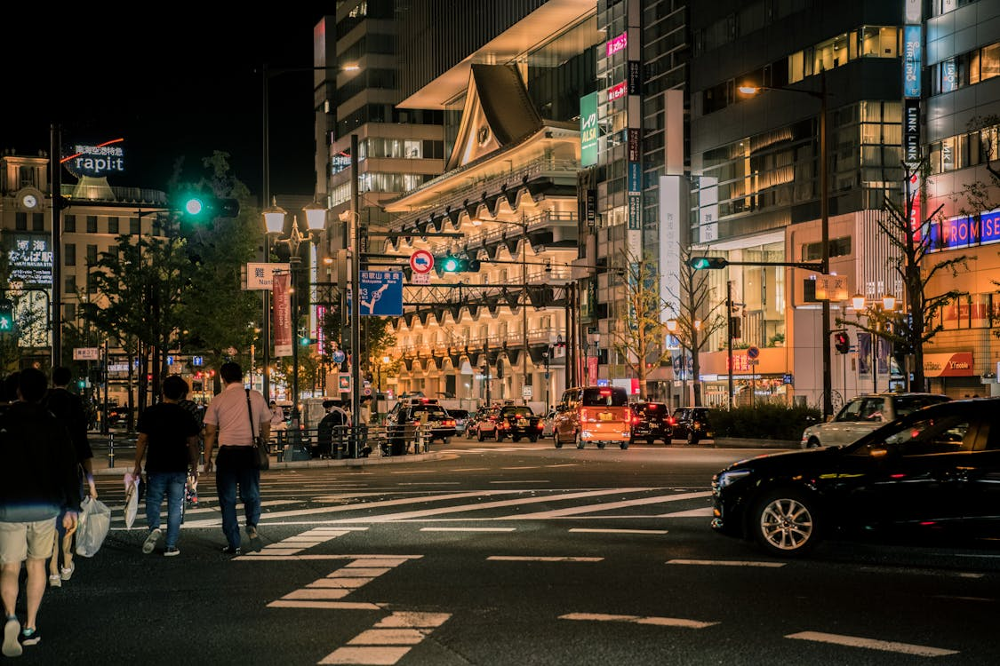
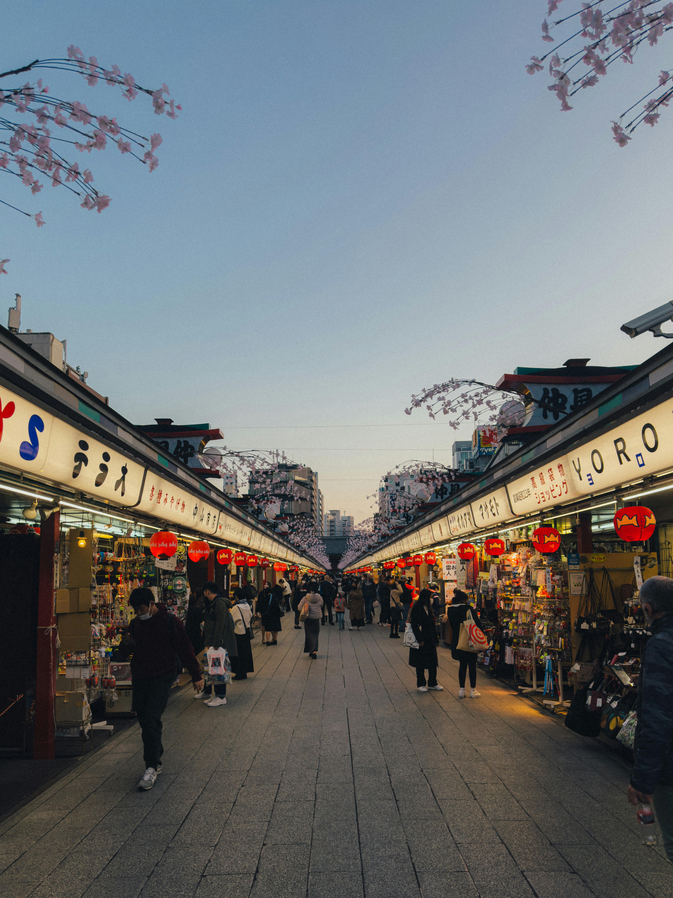

As the capital city, Tokyo is a bustling metropolis known for its vibrant culture, cutting-edge technology, and diverse neighborhoods. Visitors can explore iconic landmarks such as the historic Senso-ji Temple, the towering Tokyo Skytree, and the bustling Shibuya Crossing. Tokyo also offers world-class dining, shopping, and entertainment options.
JAPAN
Kyoto
Renowned for its rich history, Kyoto is a city of ancient temples, traditional tea houses, and stunning gardens. Visitors can wander through the historic Gion district, visit iconic sites like Kinkaku-ji (the Golden Pavilion) and Fushimi Inari Shrine, or experience a traditional tea ceremony. Kyoto's traditional atmosphere offers a glimpse into Japan's cultural heritage.

JAPAN
Osaka
Known as Japan's kitchen, Osaka is a food lover's paradise with its bustling street food stalls and vibrant dining scene. Visitors can sample local specialties like okonomiyaki and takoyaki in the lively Dotonbori district, explore historic sites such as Osaka Castle, or enjoy thrilling rides at Universal Studios Japan. Osaka's friendly atmosphere and energetic nightlife make it a favorite destination for travelers.

JAPAN
Hiroshima
With its poignant history and peaceful ambiance, Hiroshima is a city of resilience and hope. Visitors can learn about the city's tragic past at the Hiroshima Peace Memorial Park and Museum, explore the historic Shukkeien Garden, or take a day trip to Miyajima Island to see the iconic floating torii gate. Hiroshima's commitment to peace and reconciliation makes it a moving and memorable destination.